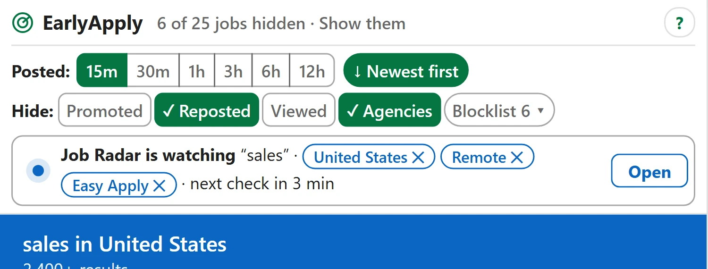
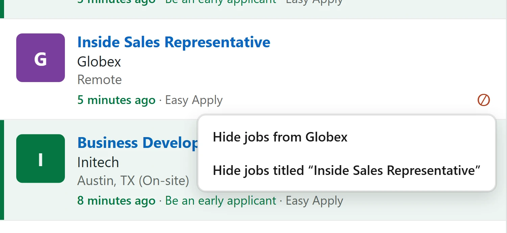
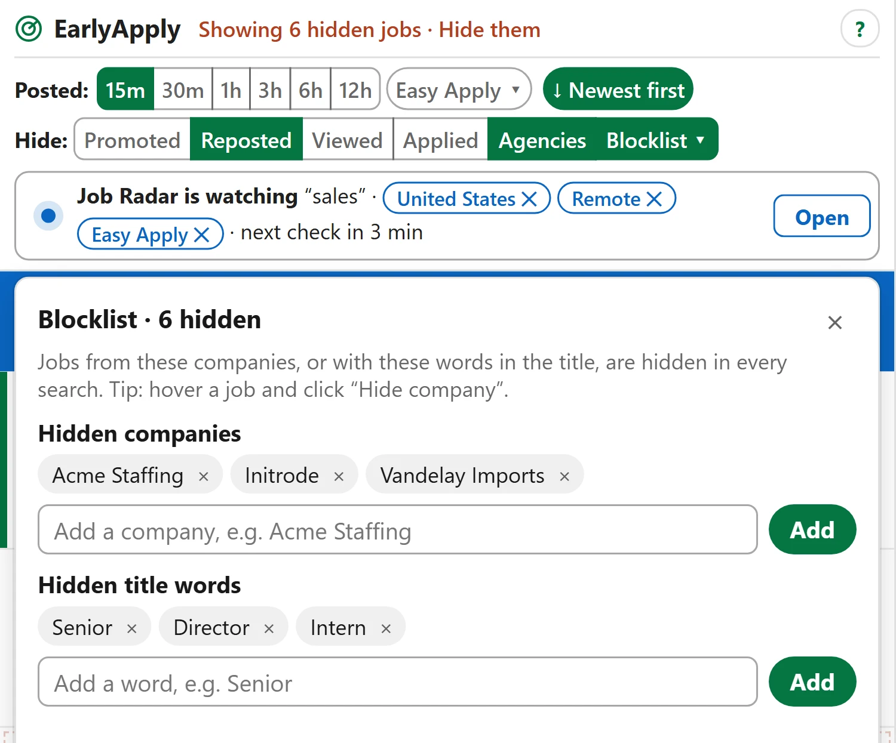
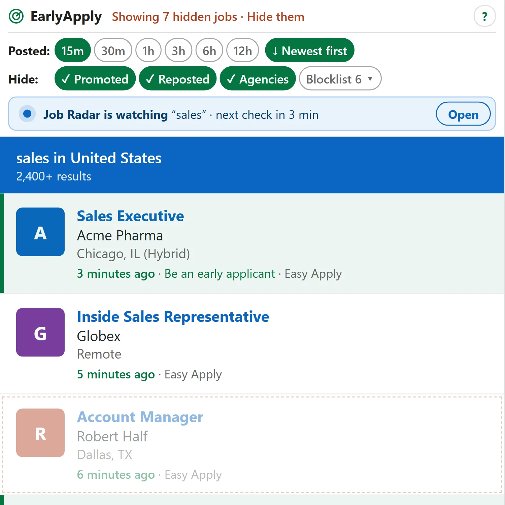
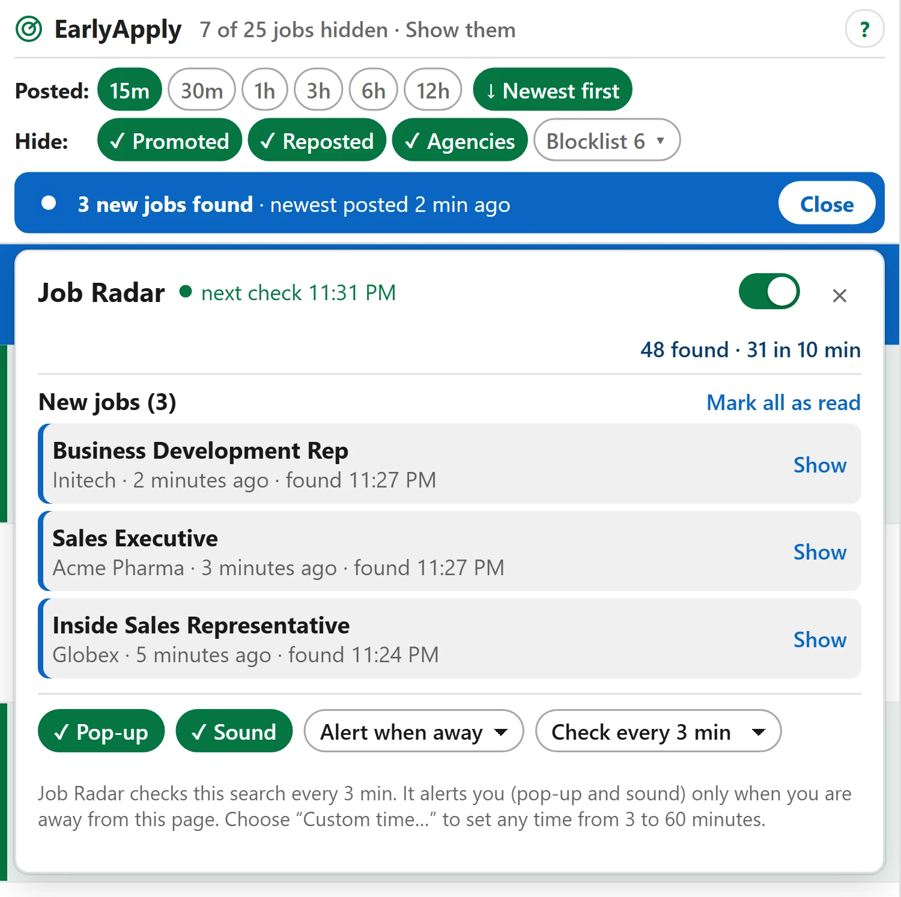
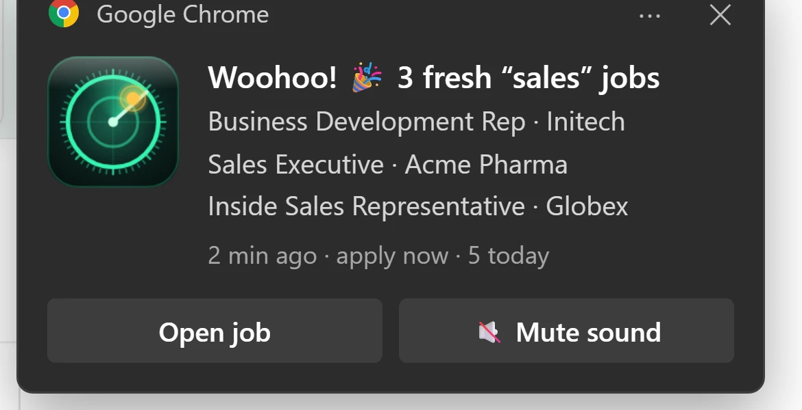
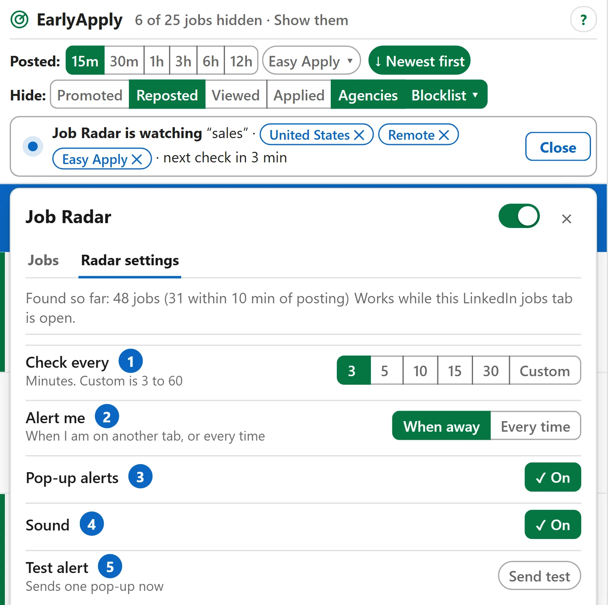
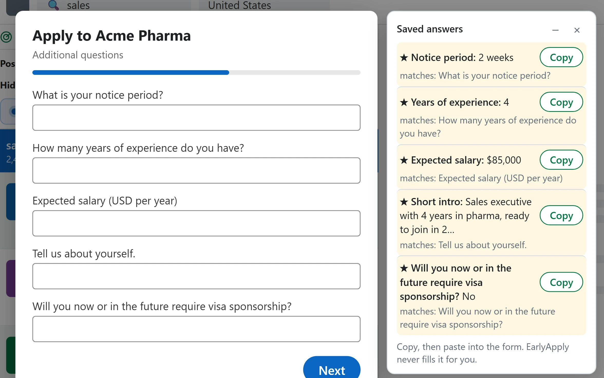
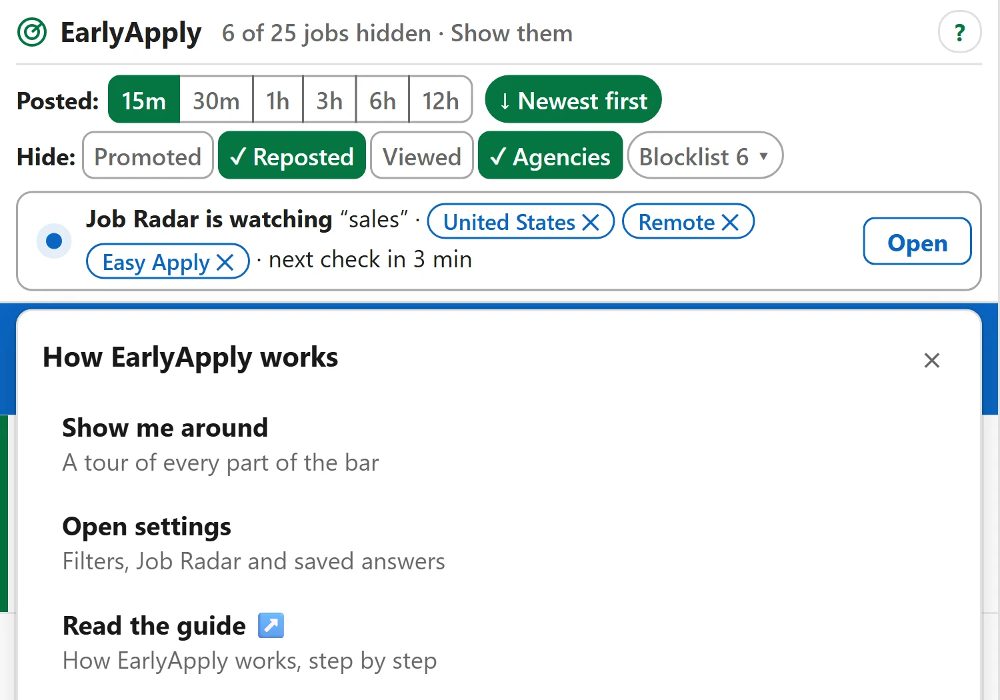
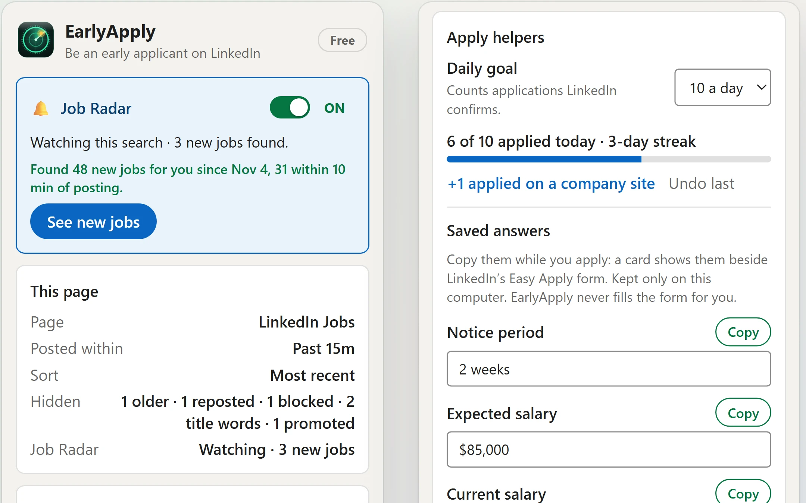

Quick start: open LinkedIn Jobs, search for a job title, and the EarlyApply bar appears above the results. Everything below is on that bar.
What it does
1. Show only fresh jobs
Pick 15m to 12h. Older jobs are hidden. Click again to turn it off. Newest first puts the newest on top.

2. Hide the noise
One click hides Reposted jobs (old jobs posted again), Promoted jobs (paid ads), Viewed jobs (you already opened them), Applied jobs (LinkedIn marks them Applied) and Agencies (70+ staffing companies).
Reposted is on by default. Promoted, Viewed and Applied are off. Promoted jobs are often new, so turn Promoted on only if you want to remove ads.
The Easy Apply menu next to the time buttons has three choices: show all jobs, show only Easy Apply jobs, or hide Easy Apply jobs.
EarlyApply reads the top of each job page in the background to find the Promoted and Reposted labels. This takes a few seconds. Agencies and blocked words hide at once.
3. Block companies and title words
Use the Blocklist, or hover a job card and click ⊘ to hide that company or title.


4. See what was hidden
Click Show them on the bar. Hidden jobs appear faded. Click again to hide them.
Promoted and Reposted jobs that stay on the list carry a small tag. Jobs older than your time window show a grey "Older" tag when you click Show them.

5. Job Radar: alerts for new jobs
Click Job Radar. It watches your search and alerts you within minutes of a new job being posted. Choose how often it checks (3 minutes to 1 hour), and turn the pop-up or sound on or off.


Radar settings
Open the Radar settings tab in the Job Radar panel. It has five lines:

- Check every: how often Radar looks for new jobs, in minutes. Pick 3, 5, 10, 15 or 30, or choose Custom for any time from 3 to 60.
- Alert me: When away alerts you only while you are on another tab. Every time alerts you for every new job, even while you look at LinkedIn.
- Pop-up alerts: turns the desktop pop-up on or off. If it is off, new jobs still show in the Job Radar panel, but not in other apps.
- Sound: turns the alert sound on or off.
- Test alert: press Send test to get one pop-up now and check that alerts reach you. If nothing shows, see the Windows notification steps in the questions below.
6. Saved answers
Save your usual answers once. On an Easy Apply form, the matching answer shows beside the question. You copy it. EarlyApply never fills or submits for you.

7. Need help?
Click ? on the bar for the tour (11 steps, one part of the bar at a time), this guide, or email. The toolbar icon opens settings.


Bar messages
- 6 of 25 jobs hidden: click Show them to see which.
- ✓ Nothing to hide: every job on the page is fine.
- Every job is older than 1h: pick a longer time, like 3h.
If something does not work
- No bar: search a job title on LinkedIn Jobs first. It does not show on the feed or a single job page.
- No alerts: turn on Google Chrome in Windows Settings › Notifications, and turn off Focus assist. Chrome must be open.
- Radar not checking: keep Chrome open. If you close its pinned LinkedIn tab, Radar reopens it.
- Old jobs on the new AI search: use ★ Newest jobs (how it works), or read what happened to the classic search.
- Anything else: email connect.earlyapply@gmail.com. We read every message.
Private by design: no account, no tracking, no server. Everything stays in your browser. Privacy policy.
Try EarlyApply on your next search
Be one of the first to apply: fresh jobs first, the noise hidden, and an alert within minutes of a new job being posted.
Add EarlyApply to Chrome, free No account, no data collected. Also on Microsoft Edge. See how it works →Questions
I installed EarlyApply. Where is it?
Open LinkedIn Jobs and search for a job title. The EarlyApply bar appears above the job list. It does not show on the LinkedIn feed or on a single job page.
How do I update EarlyApply right away?
Chrome and Edge update it on their own, usually within a few hours. To check now: open chrome://extensions (Edge: edge://extensions), turn on Developer mode, click Update, then turn Developer mode off again. You do not need Developer mode for the normal update.
Why do I see no alerts from Job Radar?
Open Windows Settings, then System, then Notifications, and turn on Google Chrome. Chrome must also be open for Job Radar to check.
Why does the bar say "Nothing to hide on this page"?
EarlyApply checked every job on the page and none was promoted, reposted, from a staffing agency or older than your time. Nothing needed hiding.
Is EarlyApply free, and does it collect my data?
It is free, needs no account, and has no tracking and no server. It reads the job list only in your browser.